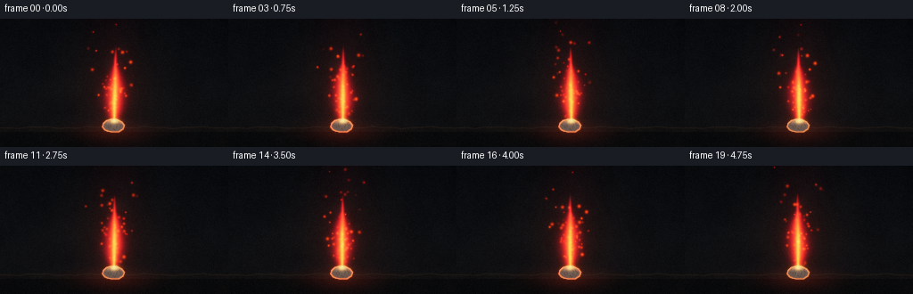
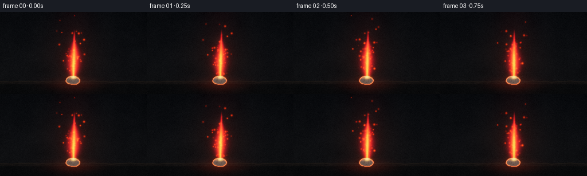

CODING AGENTS AS PIXEL WORLD MODELS
traex/DeepSeek-V4.1-Flash · material_0006
点击播放 · 原生 RGB 像素
逐轮保存的候选
回放视频、检查图与代码变化。
每份候选均可单独播放。实际图片检查记录在下方工具轨迹中。
候选 01播放与检查图
点击播放 · 原生 RGB 像素


展开代码变化
--- 上一保存版本
+++ 本次保存版本
@@ -0,0 +1,367 @@
+"""Procedurally render calcium burning on a refractory block."""
+
+from pathlib import Path
+
+import numpy as np
+from PIL import Image, ImageDraw, ImageFilter
+from scipy.ndimage import gaussian_filter
+
+import artifact_io
+
+
+CASE_DIR = Path(__file__).resolve().parent
+WIDTH = 256
+HEIGHT = 144
+FPS = 4
+FRAMES = 20
+SS = 4
+RW = WIDTH * SS
+RH = HEIGHT * SS
+
+
+def smoothstep(edge0, edge1, value):
+ amount = np.clip((value - edge0) / (edge1 - edge0), 0.0, 1.0)
+ return amount * amount * (3.0 - 2.0 * amount)
+
+
+def blur_float(image, radius):
+ return gaussian_filter(image, sigma=(radius, radius, 0), mode="nearest")
+
+
+def downscale(image):
+ return image.reshape(HEIGHT, SS, WIDTH, SS, 3).mean(axis=(1, 3))
+
+
+def draw_mask(points, blur=0.0):
+ image = Image.new("L", (RW, RH), 0)
+ draw = ImageDraw.Draw(image)
+ draw.polygon([(int(x * SS), int(y * SS)) for x, y in points], fill=255)
+ if blur:
+ image = image.filter(ImageFilter.GaussianBlur(blur))
+ return np.asarray(image, dtype=np.float32) / 255.0
+
+
+def soft_noise(rng, width, height, blur_radius):
+ values = rng.random((height, width), dtype=np.float32)
+ return gaussian_filter(values, sigma=blur_radius, mode="nearest")
+
+
+def resize_float(values, width, height):
+ image = Image.fromarray(np.asarray(values, dtype=np.float32))
+ return np.asarray(image.resize((width, height), Image.Resampling.BICUBIC), dtype=np.float32)
+
+
+def make_background():
+ rng = np.random.default_rng(7319)
+ x = (np.arange(RW, dtype=np.float32) + 0.5) / SS
+ y = (np.arange(RH, dtype=np.float32) + 0.5) / SS
+ xx, yy = np.meshgrid(x, y)
+
+ coarse = resize_float(soft_noise(rng, 32, 18, 1.2), RW, RH)
+ medium = resize_float(soft_noise(rng, 96, 54, 0.8), RW, RH)
+ fine = rng.normal(0.0, 1.0, (RH, RW)).astype(np.float32)
+
+ vertical = np.clip(yy / HEIGHT, 0.0, 1.0)
+ background = np.empty((RH, RW, 3), dtype=np.float32)
+ background[..., 0] = 0.018 + 0.024 * vertical
+ background[..., 1] = 0.022 + 0.020 * vertical
+ background[..., 2] = 0.029 + 0.016 * vertical
+
+ halo = np.exp(-(((xx - 128.0) / 51.0) ** 2 + ((yy - 82.0) / 55.0) ** 2))
+ background[..., 0] += halo * (0.030 + 0.013 * coarse)
+ background[..., 1] += halo * (0.011 + 0.006 * medium)
+ background[..., 2] += halo * 0.006
+ texture = (coarse - 0.5) * 0.025 + (medium - 0.5) * 0.011 + fine * 0.0025
+ background += texture[..., None]
+
+ # Dark refractory tile, with a slightly rough top surface.
+ top = 121.0 + 0.7 * np.sin(xx * 0.105) + 0.35 * np.sin(xx * 0.29 + 1.7)
+ tile_mask = smoothstep(-0.7, 0.7, yy - top)
+ top_mask = tile_mask * (1.0 - smoothstep(126.5, 127.2, yy))
+ front_mask = tile_mask - top_mask
+ tile_texture = (coarse - 0.5) * 0.060 + (medium - 0.5) * 0.025 + fine * 0.004
+
+ tile_top = np.empty_like(background)
+ tile_top[..., 0] = 0.044 + tile_texture * 0.75 + (yy - 121.0) * 0.0008
+ tile_top[..., 1] = 0.041 + tile_texture * 0.65
+ tile_top[..., 2] = 0.038 + tile_texture * 0.55
+ tile_front = np.empty_like(background)
+ tile_front[..., 0] = 0.021 + tile_texture * 0.35
+ tile_front[..., 1] = 0.022 + tile_texture * 0.30
+ tile_front[..., 2] = 0.023 + tile_texture * 0.25
+ background = background * (1.0 - tile_mask[..., None])
+ background += tile_top * top_mask[..., None] + tile_front * front_mask[..., None]
+
+ # A thin bevel catches a little light.
+ bevel = np.exp(-((yy - (top + 1.2)) / 0.65) ** 2) * tile_mask
+ background[..., 0] += bevel * 0.050
+ background[..., 1] += bevel * 0.035
+ background[..., 2] += bevel * 0.026
+
+ # Pooled red light on the tile is part of the static set, then modulated per frame.
+ reflection = np.exp(-(((xx - 128.0) / 41.0) ** 2 + ((yy - 127.0) / 10.0) ** 2))
+ background[..., 0] += reflection * 0.105
+ background[..., 1] += reflection * 0.024
+ background[..., 2] += reflection * 0.012
+
+ vignette = np.clip(
+ 1.0 - 0.36 * (((xx - WIDTH * 0.5) / WIDTH) ** 2 + ((yy - HEIGHT * 0.52) / HEIGHT) ** 2),
+ 0.54,
+ 1.0,
+ )
+ return background * vignette[..., None], x, y, xx, yy
+
+
+def make_sample_assets(xx, yy):
+ sample_points = [
+ (117.2, 125.0),
+ (114.3, 121.5),
+ (115.5, 117.0),
+ (119.2, 113.9),
+ (124.8, 112.4),
+ (131.1, 112.7),
+ (137.1, 115.7),
+ (140.1, 119.7),
+ (138.4, 124.4),
+ (133.6, 127.3),
+ (125.5, 127.5),
+ (120.3, 126.7),
+ ]
+ mask = draw_mask(sample_points)
+ mask_image = Image.fromarray((mask * 255).astype(np.uint8), mode="L")
+ eroded = np.asarray(mask_image.filter(ImageFilter.MinFilter(9)), dtype=np.float32) / 255.0
+ edge = np.clip(mask - eroded, 0.0, 1.0)
+
+ crack_image = Image.new("L", (RW, RH), 0)
+ crack_draw = ImageDraw.Draw(crack_image)
+ cracks = [
+ [(122.0, 113.7), (124.0, 116.0), (122.8, 119.0), (124.7, 121.4)],
+ [(130.0, 113.2), (129.0, 116.3), (131.4, 118.7), (130.1, 122.2)],
+ [(135.0, 115.2), (133.3, 117.6), (135.4, 120.0)],
+ [(118.2, 119.0), (121.0, 120.2), (122.0, 123.0)],
+ [(127.2, 123.4), (128.7, 125.1)],
+ ]
+ for line in cracks:
+ crack_draw.line([(int(px * SS), int(py * SS)) for px, py in line], fill=220, width=2)
+ crack_image = crack_image.filter(ImageFilter.GaussianBlur(0.45))
+ crack = np.asarray(crack_image, dtype=np.float32) / 255.0
+ crack *= mask
+
+ top_light = smoothstep(126.0, 113.2, yy) * (0.45 + 0.55 * np.exp(-((xx - 128.0) / 14.0) ** 2))
+ side_light = smoothstep(118.0, 127.5, yy) * (0.35 + 0.65 * np.exp(-((xx - 126.0) / 17.0) ** 2))
+ mineral = (
+ 0.5
+ + 0.22 * np.sin(xx * 1.73 + yy * 0.91)
+ + 0.14 * np.sin(xx * 0.41 - yy * 2.17 + 0.8)
+ )
+ return mask, edge, crack, top_light, side_light, mineral
+
+
+def add_spark(buffer, x, y, sigma, strength, color):
+ center_x = int(round(x * SS))
+ center_y = int(round(y * SS))
+ reach = max(2, int(np.ceil(sigma * SS * 3.2)))
+ x0 = max(0, center_x - reach)
+ x1 = min(RW, center_x + reach + 1)
+ y0 = max(0, center_y - reach)
+ y1 = min(RH, center_y + reach + 1)
+ if x0 >= x1 or y0 >= y1:
+ return
+ local_x = (np.arange(x0, x1, dtype=np.float32) + 0.5) / SS
+ local_y = (np.arange(y0, y1, dtype=np.float32) + 0.5) / SS
+ patch_x, patch_y = np.meshgrid(local_x, local_y)
+ spot = np.exp(-((patch_x - x) ** 2 + (patch_y - y) ** 2) / (2.0 * sigma * sigma))
+ for channel in range(3):
+ buffer[y0:y1, x0:x1, channel] += spot * strength * color[channel]
+
+
+def render_frame(frame_index, background, x, y, xx, yy, sample_assets):
+ time = frame_index / FPS
+ rng = np.random.default_rng(9001 + frame_index * 977)
+ sample_mask, sample_edge, crack, top_light, side_light, mineral = sample_assets
+
+ # Slow, low-amplitude drift keeps the shot alive without changing the steady burn.
+ drift_x = 0.35 * np.sin(time * 1.15) + 0.15 * np.sin(time * 2.1 + 1.4)
+ drift_y = 0.22 * np.sin(time * 0.83 + 0.5)
+ cx = xx - drift_x
+ cy = yy - drift_y
+
+ image = background.copy()
+
+ # Faint smoke curls above the flame, behind the emission.
+ height_above = 116.0 - cy
+ smoke_center = (
+ 128.0
+ + 4.5 * np.sin(height_above * 0.095 - time * 2.0)
+ + 2.0 * np.sin(height_above * 0.037 + time * 1.15 + 0.6)
+ )
+ smoke_width = 4.0 + 0.10 * np.maximum(height_above, 0.0)
+ smoke = np.exp(-((cx - smoke_center) / smoke_width) ** 2)
+ smoke *= smoothstep(47.0, 77.0, height_above) * smoothstep(27.0, 54.0, cy)
+ smoke *= 0.040 + 0.014 * np.sin(height_above * 0.31 + time * 1.7)
+ image[..., 0] += smoke * 0.46
+ image[..., 1] += smoke * 0.42
+ image[..., 2] += smoke * 0.40
+
+ # Calcium fragment: pale mineral body, charred cracks and red-hot edges.
+ fragment_texture = np.clip(mineral, 0.0, 1.0)
+ fragment = np.empty_like(image)
+ fragment[..., 0] = 0.235 + 0.175 * top_light + 0.070 * side_light + 0.065 * fragment_texture
+ fragment[..., 1] = 0.228 + 0.165 * top_light + 0.058 * side_light + 0.055 * fragment_texture
+ fragment[..., 2] = 0.212 + 0.135 * top_light + 0.050 * side_light + 0.050 * fragment_texture
+ fragment *= (1.0 - 0.62 * crack[..., None])
+ fragment[..., 0] += sample_edge * (0.36 + 0.12 * np.sin(time * 2.0))
+ fragment[..., 1] += sample_edge * 0.075
+ fragment[..., 2] += sample_edge * 0.020
+ image = image * (1.0 - sample_mask[..., None]) + fragment * sample_mask[..., None]
+
+ # A hot seam where the flame meets the mineral surface.
+ base_heat = np.exp(-(((cx - 128.0) / 7.6) ** 2 + ((cy - 114.7) / 1.9) ** 2))
+ image[..., 0] += base_heat * 0.34
+ image[..., 1] += base_heat * 0.070
+ image[..., 2] += base_heat * 0.018
+
+ emission = np.zeros_like(image)
+ emission[..., 0] += sample_edge * 1.8 * (0.84 + 0.16 * np.sin(time * 2.2))
+ emission[..., 1] += sample_edge * 0.31
+ emission[..., 2] += sample_edge * 0.045
+
+ # Flame field. Calcium's flame-test color is a saturated brick red; the inner
+ # regions are warmer while the fringe carries a narrow violet-red edge.
+ base_x = 128.0 + 0.35 * np.sin(time * 1.1)
+ base_y = 115.2 + 0.18 * np.sin(time * 1.7 + 0.4)
+ flame_height = 84.0 + 1.4 * np.sin(time * 1.35 + 0.7)
+ t_raw = (base_y - cy) / flame_height
+ t = np.clip(t_raw, 0.0, 1.0)
+
+ sway = (
+ 0.80 * np.sin(time * 1.9 + 0.5)
+ + 0.55 * np.sin(time * 3.1 + 2.2)
+ + 0.28 * np.sin(time * 5.0 + 0.8)
+ )
+ center = base_x + sway * (0.12 + 0.88 * t ** 1.25)
+ center += t ** 1.8 * 1.4 * np.sin(time * 2.45 + 0.9)
+ half_width = (
+ 2.55 + 6.75 * np.sin(np.pi * np.clip(t / 0.76, 0.0, 1.0)) ** 0.88
+ ) * (1.0 - t) ** 0.36
+ half_width = np.maximum(half_width, 0.22)
+
+ ripple = (
+ 0.105 * np.sin(8.0 * t - time * 4.7 + 0.55)
+ + 0.060 * np.sin(15.5 * t + time * 6.3 + 1.8)
+ + 0.035 * np.sin(25.0 * t - time * 8.1)
+ )
+ u = (cx - center) / half_width + ripple * (0.35 + 0.65 * t)
+ vertical_envelope = smoothstep(-0.025, 0.055, t_raw) * smoothstep(1.025, 0.70, t_raw)
+
+ outer = np.exp(-1.85 * u * u)
+ outer += 0.26 * np.exp(-5.2 * (u - 0.55 * np.sin(5.0 * t - time * 2.5)) ** 2)
+ outer *= vertical_envelope * (0.93 + 0.09 * np.sin(17.0 * t + time * 3.4))
+ fringe = np.exp(-0.68 * u * u) * vertical_envelope
+
+ middle_width = np.maximum(half_width * 0.69, 0.20)
+ u_mid = (cx - center + 0.28 * np.sin(9.0 * t - time * 2.1)) / middle_width
+ middle = np.exp(-2.15 * u_mid * u_mid)
+ middle *= smoothstep(-0.02, 0.045, t_raw) * smoothstep(0.88, 0.53, t_raw)
+
+ core_width = np.maximum(half_width * 0.38, 0.16)
+ u_core = (cx - center + 0.16 * np.sin(10.0 * t + time * 2.8)) / core_width
+ core = np.exp(-2.8 * u_core * u_core)
+ core *= smoothstep(-0.012, 0.035, t_raw) * smoothstep(0.66, 0.32, t_raw)
+
+ hot_base = np.exp(-(((cx - base_x) / 3.9) ** 2 + ((cy - 114.7) / 2.2) ** 2))
+ emission[..., 0] += fringe * 0.47
+ emission[..., 1] += fringe * 0.009
+ emission[..., 2] += fringe * 0.075
+ emission[..., 0] += outer * 1.48
+ emission[..., 1] += outer * 0.075
+ emission[..., 2] += outer * 0.025
+ emission[..., 0] += middle * 1.52
+ emission[..., 1] += middle * 0.35
+ emission[..., 2] += middle * 0.030
+ emission[..., 0] += core * 1.78
+ emission[..., 1] += core * 0.78
+ emission[..., 2] += core * 0.115
+ emission[..., 0] += hot_base * 2.3
+ emission[..., 1] += hot_base * 1.35
+ emission[..., 2] += hot_base * 0.36
+
+ # Deterministic looping sparks, each with its own lifetime and lateral curl.
+ spark_rng = np.random.default_rng(481)
+ spark_count = 74
+ phases = spark_rng.random(spark_count)
+ lifetimes = spark_rng.uniform(0.85, 2.15, spark_count)
+ x_origins = spark_rng.normal(128.0, 3.2, spark_count)
+ velocities = spark_rng.normal(0.0, 8.0, spark_count)
+ rises = spark_rng.uniform(30.0, 62.0, spark_count)
+ sizes = spark_rng.uniform(0.42, 1.02, spark_count)
+ strengths = spark_rng.uniform(0.45, 1.35, spark_count)
+ curls = spark_rng.uniform(1.0, 3.3, spark_count)
+ curl_phases = spark_rng.uniform(0.0, np.pi * 2.0, spark_count)
+ for index in range(spark_count):
+ age = ((time / lifetimes[index] + phases[index]) % 1.0)
+ spark_y = base_y - 1.0 - rises[index] * lifetimes[index] * age
+ spark_x = (
+ x_origins[index]
+ + velocities[index] * lifetimes[index] * age
+ + curls[index] * np.sin(age * 8.0 + curl_phases[index])
+ )
+ fade = np.sin(np.pi * age) ** 0.72
+ strength = strengths[index] * fade
+ color = (2.2, 0.24, 0.035) if index % 5 else (1.45, 0.055, 0.025)
+ add_spark(emission, spark_x, spark_y, sizes[index], strength, color)
+
+ # Small incandescent pockets along the sample.
+ for px, py, phase in ((120.8, 116.1, 0.4), (134.7, 116.8, 1.8), (126.0, 113.2, 3.1)):
+ pulse = 0.55 + 0.45 * np.sin(time * 3.1 + phase)
+ add_spark(emission, px, py, 0.72, 0.34 * pulse, (1.6, 0.28, 0.035))
+
+ # Optical bloom is intentionally restrained; the flame edge remains readable.
+ base_small = downscale(image)
+ emission_small = downscale(emission)
+ glow_tight = blur_float(emission_small, 1.05)
+ glow_medium = blur_float(emission_small, 4.6)
+ glow_wide = blur_float(emission_small, 11.5)
+
+ hdr = (
+ base_small
+ + 0.92 * emission_small
+ + 0.30 * glow_tight
+ + 0.16 * glow_medium
+ + 0.075 * glow_wide
+ )
+ hdr[..., 0] += 0.022 * np.exp(-(((np.arange(WIDTH)[None, :] - 128.0) / 31.0) ** 2))
+
+ mapped = 1.0 - np.exp(-np.maximum(hdr, 0.0) * 1.22)
+ mapped = np.power(mapped, 1.0 / 1.08)
+
+ # Gentle shadow lift, warm highlight rolloff, then a deterministic film grain.
+ mapped = mapped * 0.965 + np.array([0.008, 0.010, 0.013], dtype=np.float32)
+ luminance = mapped[..., 0] * 0.2126 + mapped[..., 1] * 0.7152 + mapped[..., 2] * 0.0722
+ mapped = np.clip(luminance[..., None] + (mapped - luminance[..., None]) * 1.12, 0.0, 1.0)
+ grain = rng.normal(0.0, 0.0065, (HEIGHT, WIDTH, 1)).astype(np.float32)
+ mapped = np.clip(mapped + grain, 0.0, 1.0)
+
+ final_x = np.arange(WIDTH, dtype=np.float32)[None, :]
+ final_y = np.arange(HEIGHT, dtype=np.float32)[:, None]
+ vignette = np.clip(
+ 1.0 - 0.27 * (((final_x - 128.0) / WIDTH) ** 2 + ((final_y - 73.0) / HEIGHT) ** 2),
+ 0.64,
+ 1.0,
+ )
+ mapped *= vignette[..., None]
+ return np.clip(mapped * 255.0 + 0.5, 0, 255).astype(np.uint8)
+
+
+def main():
+ background, x, y, xx, yy = make_background()
+ sample_assets = make_sample_assets(xx, yy)
+ frames = [
+ render_frame(index, background, x, y, xx, yy, sample_assets)
+ for index in range(FRAMES)
+ ]
+ artifact_io.save(np.stack(frames), CASE_DIR)
+
+
+if __name__ == "__main__":
+ main()
可观测工具轨迹
实际执行的命令与返回图片。
命令 1exit 0
/bin/bash -c "pwd && rg --files -g 'prompt.txt' -g 'GENERATION_RULES.md' -g 'task_spec.json' -g '"'!node_modules'"' -g '"'!*.mp4'"'"
命令 2exit 0
/bin/bash -c "find . -maxdepth 2 -type f -printf '%p\\n' | sort | head -200"
命令 3exit 0
/bin/bash -c 'cat prompt.txt'
命令 4exit 0
/bin/bash -c 'cat GENERATION_RULES.md'
命令 5exit 0
/bin/bash -c 'cat task_spec.json'
命令 6exit 0
/bin/bash -c "sed -n '1,260p' artifact_io.py && printf '\\n--- player ---\\n' && sed -n '1,220p' player_template.html"
命令 7exit 1
/bin/bash -c 'python generate.py'
命令 8exit 0
/bin/bash -c "python - <<'PY'
for name in ('scipy','cv2'):
try:
mod=__import__(name)
print(name, getattr(mod,'__version__','ok'))
except Exception as exc:
print(name, 'missing', exc)
PY"命令 9exit 0
/bin/bash -c 'python generate.py'
命令 10exit 127
/bin/bash -c 'file frames/00.png inspection.png transition_check.png pixels.npz index.html && du -h pixels.npz index.html inspection.png'
命令 11exit 0
/bin/bash -c "python - <<'PY'
from pathlib import Path
import numpy as np
from PIL import Image
frames=np.stack([np.asarray(Image.open(p).convert('RGB')) for p in sorted(Path('frames').glob('*.png'))])
print('shape',frames.shape)
for i,f in enumerate(frames):
lum=f@np.array([.2126,.7152,.0722])
hot=(f[:,:,0]>170)&(f[:,:,0]>f[:,:,1]*1.5)
ys,xs=np.where(hot)
print(f'{i:02d} mean={f.mean():5.1f} max={f.max():3d} hot={hot.mean():.3f} bbox=({xs.min() if len(xs) else -1},{ys.min() if len(ys) else -1})-({xs.max() if len(xs) else -1},{ys.max() if len(ys) else -1})')
PY"命令 12exit 0
/bin/bash -c "python - <<'PY'
from PIL import Image
import numpy as np
im=np.asarray(Image.open('frames/00.png').convert('RGB'))
# 64x36 luminance field, with letters marking red/yellow hot areas.
small=np.asarray(Image.fromarray(im).resize((64,36),Image.Resampling.BILINEAR)).astype(float)
chars=' .,:;irsXA253hMHGS#9B&@'
lum=small@np.array([.2126,.7152,.0722])
red=(small[:,:,0]>100)&(small[:,:,0]>small[:,:,1]*1.55)&(small[:,:,0]>small[:,:,2]*1.2)
warm=(small[:,:,0]>80)&(small[:,:,1]>40)&~red
for y in range(36):
line=''
for x in range(64):
if red[y,x]: c='R' if small[y,x,0]<190 else 'Y'
elif warm[y,x]: c='w'
else: c=chars[min(len(chars)-1,int(lum[y,x]/256*len(chars)*2.4))]
line+=c
print(line.rstrip())
PY"命令 13exit 0
/bin/bash -c "python - <<'PY' from PIL import Image for p in ['frames/00.png','frames/10.png','frames/19.png','inspection.png','transition_check.png']: im=Image.open(p); print(p, im.size, im.mode) PY"
命令 14exit 0
/bin/bash -c "python - <<'PY'
from PIL import Image
import numpy as np
frames=np.stack([np.asarray(Image.open(f'frames/{i:02d}.png').convert('RGB'),dtype=np.float32) for i in range(20)])
for i in [0,5,10,15,19]:
f=frames[i]
print('\\nframe',i)
for name,(x0,x1,y0,y1) in {'flame':(105,151,34,116),'core':(120,136,60,110),'sample':(112,142,111,128),'tile':(0,256,128,144),'bg':(0,256,0,34)}.items():
c=f[y0:y1,x0:x1]
print(name,'rgb',np.round(c.mean((0,1)),1),'max',c.max((0,1)).astype(int),'p95',np.percentile(c,95,axis=(0,1)).round(0).astype(int))
# temporal variation of frame mean and hot centroid
for i in range(20):
f=frames[i]; hot=(f[:,:,0]>170)&(f[:,:,0]>f[:,:,1]*1.5); ys,xs=np.where(hot)
print(i, 'hot',round(hot.mean()*100,2), 'cx',round(xs.mean(),1),'cy',round(ys.mean(),1),'Rmean',round(f[:,:,0].mean(),1),'diff',round(np.abs(f-frames[i-1]).mean(),2) if i else 0)
PY"命令 15exit 1
/bin/bash -c "python - <<'PY'
from PIL import Image
import numpy as np
im=np.asarray(Image.open('frames/00.png').convert('RGB'),dtype=np.float32)
# Quantized 8x8 block means. Uppercase = flame-red dominant.
for y in range(0,144,6):
line=''
for x in range(0,256,4):
c=im[y:y+6,x:x+4].mean((0,1))
r,g,b=c
if r>g*1.55 and r>b*1.3 and r>30: cchar='R' if r<190 else 'Y'
elif r>g*1.25 and r>b*1.15 and r>22: cchar='r'
else: cchar=' .:-=+*#%@'[min(10,int((r+g+b)/18))]
line+=cchar
print(line.rstrip())
PY"命令 16exit 0
/bin/bash -c 'command -v chafa || true; command -v viu || true; command -v jp2 || true; command -v ffmpeg || true; command -v convert || true; command -v magick || true'
命令 17exit 0
/bin/bash -c "python - <<'PY'
from pathlib import Path
import base64,json,re
import numpy as np
from PIL import Image
n,h,w,fps=20,144,256,4
frames=np.stack([np.asarray(Image.open(f'frames/{i:02d}.png').convert('RGB'),dtype=np.uint32) for i in range(n)])
assert frames.shape==(n,h,w,3)
packed=(frames[:,:,:,0]<<16)|(frames[:,:,:,1]<<8)|frames[:,:,:,2]
npz=np.load('pixels.npz')['pixels']
assert np.array_equal(npz,packed.transpose(1,2,0))
html=Path('index.html').read_text()
assert 'window.__pixelReady=true' in html and '__DATA__' not in html
assert 'data:audio' not in html
assert 'A piece of calcium is ignited' in html
# Reconstruct the encoded delta stream and verify the final frame.
data=json.loads(re.search(r'const DATA=(\\{.*?\\}),W=DATA',html).group(1))
def unpack(s):
raw=base64.b64decode(s)
return np.frombuffer(raw,dtype='<u4').copy()
cur=unpack(data['first'])
for encoded in data['deltas']:
packet=unpack(encoded)
i=0
while i<len(packet):
start,count=int(packet[i]),int(packet[i+1]); i+=2
cur[start:start+count]=packet[i:i+count]; i+=count
assert np.array_equal(cur,packed[-1].reshape(-1))
print('artifact integrity: ok')
print('frames:',n,'size:',f'{w}x{h}','fps:',fps,'duration:',n/fps,'s')
print('unique colors (frame 0):',len(np.unique(frames[0].reshape(-1,3),axis=0)))
print('pixel tensor:',npz.shape,npz.dtype,'range:',int(npz.min()),int(npz.max()))
print('index size:',Path('index.html').stat().st_size,'bytes')
PY"命令 18exit 0
/bin/bash -c "python -m py_compile generate.py && python - <<'PY'
from pathlib import Path
required=['generate.py','pixels.npz','index.html','inspection.png','transition_check.png']
for name in required:
p=Path(name); print(name, 'ok' if p.is_file() and p.stat().st_size else 'missing')
print('frames',len(list(Path('frames').glob('*.png'))))
PY"保存候选 1 份；完成命令 18 次；可验证图片返回 0 张。原始 API 响应与完整日志保留在本地。